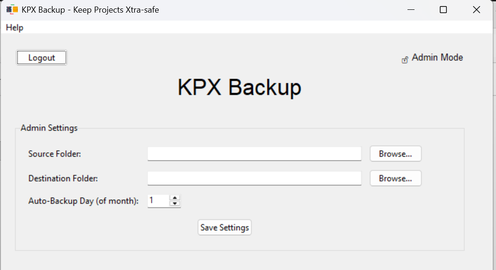

KPX Backup
A professional desktop application for automated and scheduled backups.


About This Project
KPX Backup was created to solve a common problem: keeping important data safe without manual intervention. It provides a robust, user-friendly interface for both technical and non-technical users, ensuring that project folders are backed up regularly and reliably.
Key Features
- Admin/User Login System
- Persistent Configuration Settings
- Automatic Monthly Backups
- Progress Bar for Large Operations
- Compressed ZIP File Output
- Built with Python and Tkinter
Technical Challenges
This project was a great exercise in state management, threading for responsive UIs, and file system operations. Learning to handle asynchronous tasks was key to preventing the application from freezing during backups.